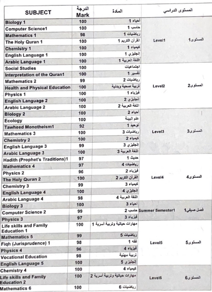

I embarked on my educational journey at Qurtubah Elementary School,
where I remained until my graduation from Qurtubah High School.
These institutions provided me with a nurturing environment,
exceptional educators, and a strong foundation for academic growth and personal development.
End
After completing high school, I started a new Chapter of my academic life in university Of Jeddah, Where I managed to become a cyber security
student, Currently I am thriving and pursuing towards my goal of graduating University and hopefully getting a job.
Institute
the University of Jeddah one of the new University in Kingdom of Saudi Arabia .
It was founded in 1435 AH/2014 AD by the Royal Decree No.20937 dated 2/6/1435 AH approving the decision oh the Higer Education Council,
held in its seventy-second session on 4/6/1434 AH , to establish the University of Jeddah.
Degree
I successfully completed my high school education at Qurtubah Private High School, achieving a GPA of 99.05

Certificate
During my three years of college, I had the privilege of earning two excellence certificates. these certificates serve as proof to my hardwork and my commitment
to achieving excellent grades.